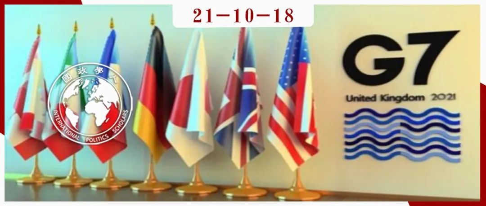

收录于合集

作品简介
作者 ： 本文发表在《美国国际法杂志》的专栏“美国国际法的当代实践”中。该专栏主编为Kristen Eichensehr，弗吉尼亚大学法学院教授、国家安全法律中心主任。
编译： 胡瑞琨（国政学人编译员，布里斯托大学政治学博士生）
来源： Kristen Eichensehr et al., Biden Administration Imposes Sanctions and Seeks to Cement Alliances to Counter China and Russia, 115 American Journal of International Law 536-545 (2021).
归档： 《国际关系前沿》2021年第10期，总第37期。

内容摘要
拜登政府的外交政策强调修复美国联盟，让美国回到 “值得信赖的领导地位” ，以应对来自俄罗斯，尤其是中国日益增加的挑战。美国在2021年3月发布的《国家安全战略中期指导方针》指出，美国必须应对权力的全球分配正在发生变化的现实，强调迅速变得更加自信的中国是唯一有能力结合其经济、外交、军事和技术力量，对“稳定和开放的国际体系”发起持续挑战的国家，同时俄罗斯仍然决心增强其全球影响力，并在世界舞台上发挥颠覆性作用。为重申“既定的国际规范”，拜登政府已单方面采取行动并与盟友协调，以侵犯人权、恶意网络活动和选举影响等因素为理由对中俄实施制裁。同时拜登政府还采取措施巩固其在印太和西方的联盟。
拜登政府尽管对国际体系的态度与之前特朗普政府的敌对大有不同，但在应对中国方面具有一定的连续性，在某种程度上对俄罗斯也是如此。 对华方面，特朗普政府征收关税以试图诱导中国改变其经济行为，并以人权为由施加制裁。对俄方面，尽管特朗普与普京关系缓和众所周知，但美国仍然对俄起诉、实施制裁并采取了有关军事行动。拜登政府似乎正在走上相似的道路，但要在与其盟友和志同道合的民主国家的合作下进行。
由于美国在上半年里对中国的一系列无理指控为各位读者所熟知，译者重点选取文章中美国联合其盟友对俄制裁的几个关键事件进行介绍。
文章导读
01
指控纳瓦尔尼人权事件
拜登政府表示，美国既不寻求重置，也不寻求升级与俄罗斯的关系。尽管拜登和普京在2月迅速达成将《新削减战略武器条约》再延长五年的协议，但是拜登政府此后采取了一系列措施在各方面对抗俄罗斯。
首先，美国与其盟友以“俄罗斯毒害反对派人物阿列克谢·纳瓦尔尼 （Aleksey Navalny)）并将其监禁”为由制裁俄罗斯官员。3月2日，美国财政部、国务院和商务部对9名俄罗斯高级官员实施经济制裁，同时将六个实体添加到“通过制裁法案反击美国对手”名单中，该名单对“任何故意与这些实体进行重大交易的人”实施强制性制裁。另外，美国根据《化学和生物武器控制和战争消除法》对可用于生物制剂和化学武器生产的物品施加了新的出口限制。
欧盟与美国步伐协调一致，对另外两名受美国制裁的个人也实施了制裁。在宣布协调制裁时，美国国务卿安东尼·布林肯断言，美国与欧盟一道谴责并回应俄罗斯使用化学武器暗杀纳瓦尔尼并将其监禁的企图，并解释称，美国行使其权威发出明确信号，俄罗斯使用化学武器和侵犯人权会产生严重后果。
02
指控俄操纵影响美国选举
其次，3月17日，美国情报界发布了一份报告，重点介绍了俄罗斯在2020年总统大选中的影响行动。拜登在接受媒体采访时甚至肯定地回应了“普京是杀手”的问题。同日，俄罗斯召回驻美大使以处理与美关系方面的策略。
4月15日，美国采取了多项措施，要求俄罗斯对各种破坏稳定的行为负责。拜登发布了一项行政命令，题为“对俄罗斯联邦政府的特定有害外国活动的财产进行封锁”，并援引《国际紧急经济权力法》、《国家紧急情况法》和1952年《移民和国籍法》，该命令宣布国家进入紧急状态并指出“俄罗斯联邦政府的有害外国活动，特别是破坏美国及其盟友和合作伙伴自由公正的民主选举和民主制度的行为；参与和促进针对美国及其盟友和合作伙伴的恶意网络活动；助长和利用跨国腐败影响外国政府；从事针对持不同政见者或记者的法外活动；破坏对美国国家安全至关重要的国家和地区的安全；违反包括尊重国家领土完整在内的既定的国际法原则，对美国的国家安全、外交政策和经济构成了非同寻常的威胁。”拜登政府立即使用了该命令提供的一些新权限。有评论指出，这一系列行动将使莫斯科在国际资本市场筹集资金的能力复杂化。
03
指控俄方黑客行动与情报机构
拜登政府还利用新的授权来应对SolarWinds黑客活动，正式将其归咎于俄罗斯的对外情报局。财政部制裁了6家在俄罗斯联邦经济技术部门运营、支持俄罗斯情报部门的公司。尽管美国将SolarWinds事件描述为“情报收集工作”，然而白宫高级官员称制裁有三个核心原因。首先，危害的的广泛范围和巨大规模导致这是一个国家安全和公共安全问题；其次，间谍行为的破坏是瞬间的。俄罗斯在网络空间的恶意活动的历史及其在网络空间的鲁莽行为使得这一问题变得关键；最后，这次黑客攻击给大多数私营部门的受害者带来了不应有的负担。
继制裁宣布，一些国家的政府，包括英国、加拿大和澳大利亚等国家也正式表示认为SolarWinds的入侵是俄罗斯外国情报局的行为。欧盟和新西兰同样也加入谴责俄罗斯的序列中。
在4月15日，美国对莫斯科试图影响2020年大选的行为发出制裁，并扩大对俄罗斯占领克里米亚的制裁。在美国财政部长珍妮特·耶伦（Janet Yellen）所提及的“美国开始打击俄罗斯恶意行为的新运动”中，财政部对在俄罗斯领导人的指示下试图影响2020年美国总统大选的16个实体和16个个人实施了制裁。据情报界称，普京授权“旨在诋毁当时的候选人拜登的影响行动”。这次制裁针对的是由俄罗斯情报机构运营或以其他方式附属于俄罗斯情报机构的“虚假信息网点”，以及财政部此前制裁的一些个人。另外美国财政部还与欧盟、英国、加拿大和澳大利亚合作，制裁了“俄罗斯占领克里米亚地区及以当地‘有关严重侵犯人权行为活动’的5名个人和3个实体”。
最后，美国对俄罗斯的行动作出回应，驱逐了俄罗斯驻华盛顿外交使团的10名外交官员。作为回应，俄罗斯立即驱逐了10名美国外交官，并制裁了8 名现任和前任美国政府官员。俄罗斯还呼吁美国驻俄大使约翰·沙利文返回华盛顿“进行磋商”。4月20日，沙利文宣布将以“与新政府同事会面”和“回国探亲”为由返回美国。
就美国的一系列单边行为以及联合盟友的制裁行动，中俄双方也在3月发表联合声明，敦促美国 反思近年来对全球和平与发展造成的损害，停止单边霸凌，停止干涉别国内政，停止寻求拉帮结派的小圈子集团对抗。
译者评述
文章梳理与回顾了近半年以来拜登政府对于中俄两国的制裁。拜登力求美国重新回到自己的“全球领导角色”之中。这里的“全球”的概念与范围对于美国来说是同样是狭隘的，仅是其同盟的与小圈子的。这一系列制裁看似是根据“事实”所采取的“合法”行为，然而实际却反映出，美国的国内矛盾上升并缺乏内在改革动力和能力所导致其破坏性溢出，加之其零和逻辑，自然会导致其在外部寻求树立一个“靶子”。中俄两国似乎成为了其“最佳人选”。而中国首当其冲，由于两国在文化与价值观的差异以及中国经济实力的快速发展，成为了美国所刻画甚至捏造的、要拉来“垫背”的威胁与敌人[1]。这一策略在美国国内起到了非常显著的作用，其国内民意氛围被严重毒化[2]。皮尤研究中心3月报告显示，“89%的美国人认为中国是竞争对手或敌手，而非伙伴；近五成的人认为制约中国的影响力与实力应是美国的头号外交政策目标”[3]。在中美双方高级外交官员三轮会谈之后，美国依旧没有放弃用“竞争”作为核心元素狭隘地描述其对华关系。不得不说，作为超级大国与世界霸权，美国的战略选择并不大器。毕竟，一个国家的矛盾，其化解并不应该让任何其他国际社会成员承担痛苦。
参考文献
【1】赵鼎新, 2021. “创造性破坏”与“垫背陷阱”——美国的性质与中国的应对. 文化纵横 10.
【2】新华社. 外交部发言人：希望美方多做有利于增进中美互信与合作的事_中国政府网 [WWW Document]. http://www.gov.cn/xinwen/2021-03/03/content_5590013.htm (accessed 10.10.21).
【3】Schumacher, S., Silver, L., n.d. In their own words: What Americans think about China. Pew Research Center. https://www.pewresearch.org/fact- tank/2021/03/04/in-their-own-words-what-americans-think-about-china/ (accessed 10.10.21).
词汇整理
《国家安全战略中期指导方针》 The U.S. Interim National Security Strategic Guidance (INSSG)
《新削减战略武器条约》 ****New START nuclear arms treaty
美国财政部 Treasury Department
行政命令 Executive Order
责编｜何诗雨 王图梓
排版｜屈媛媛 彭雯昕
文章观点不代表本平台观点，本平台评译分享的文章均出于专业学习之用, 不以任何盈利为目的，内容主要呈现对原文的介绍，原文内容请通过各高校购买的数据库自行下载。

国政学人
支持学术公益与知识传播
微信扫一扫赞赏作者 __赞赏
已喜欢，对作者说句悄悄话
取消 __
发送给作者
发送
最多40字，当前共字
上一页 1/3 下一页
长按二维码向我转账
支持学术公益与知识传播
受苹果公司新规定影响，微信 iOS 版的赞赏功能被关闭，可通过二维码转账支持公众号。